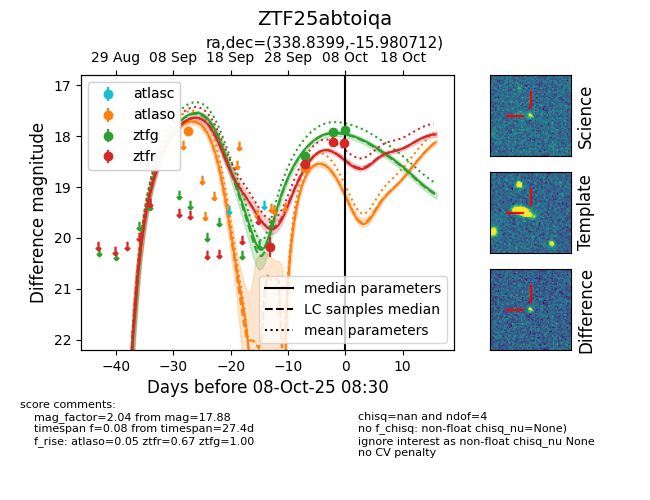
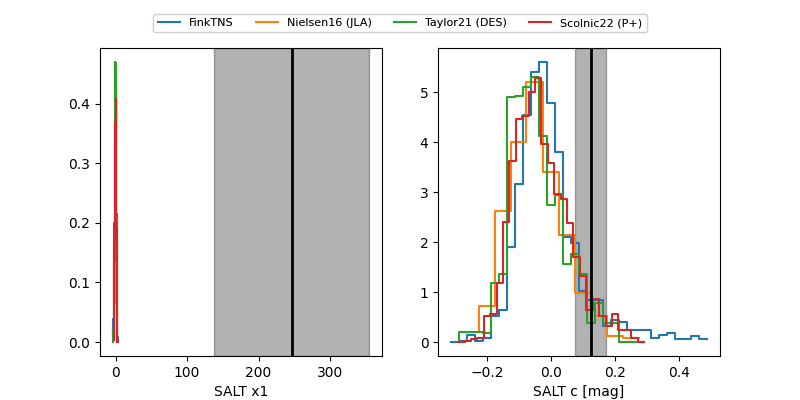

FINK: ZTF25abtoiqa
Lasair: ZTF25abtoiqa
ALeRCE: ZTF25abtoiqa
ZTF25abtoiqa (ztf,fink)
equatorial (ra, dec) = (338.8399,-15.98071)
galactic (l, b) = (45.3374,-56.58402)


last atlaso=18.63, ztfg=17.88, ztfr=18.13
2 atlaso, 3 ztfg, 4 ztfr detections